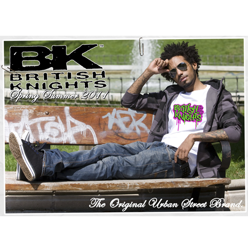
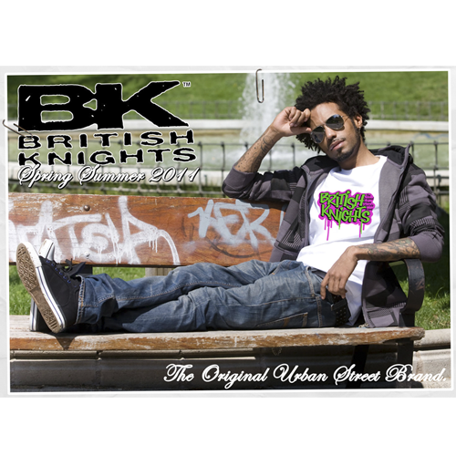
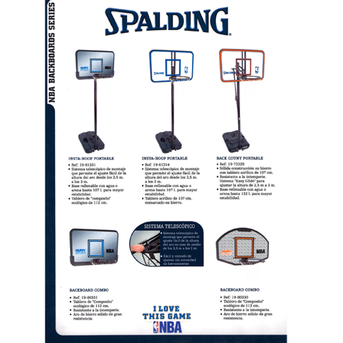
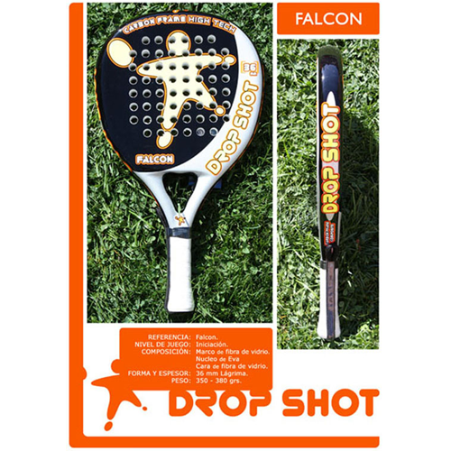

Identidad corporativa:
Diseño la identidad de su marca bajo una personalidad propia, moderna y visualmente atractiva.
Diseñador gráfico, desarrollador textil, fotógrafo y webmaster a tiempo completo en Madrid, España. Me entusiasma el diseño preciosista y llamativo pero siempre claro, amigable y práctico.
Diseño la identidad de su marca bajo una personalidad propia, moderna y visualmente atractiva.
Creación de piezas con un toque distintivo, artístico y práctico. Abarco el diseño publicitario, editorial, recreativo...
La mejor calidad de impresión en tus proyectos de pequeño, mediano y gran formato como papelería corporativa, tarjetas de visita, cartelería, folletos...
Tus proyectos online bajo una perspectiva moderna, atractiva y fácil de usar con las mejores optimizaciones de velocidad y posicionamiento (SEO).
Manejo de las redes sociales como medio indispensable para potenciar tu marca y sus productos en la red.
Rapidez, eficacia y seguridad a la hora de mandar tus avisos y promociones via email.
Grabación y postproducción de sus proyectos videográficos ya sean para el mercado doméstico u online.
La mejor calidad en tus proyectos fotográficos ya sean publicitarios o de branding.
Diseño & programación
Photoshop, Illustrator, Freehand, Pixelmator...
InDesign, QuarkXpress
Fotógrafo con equipo profesional propio y experiencia demostrable con book.
Premiere Pro, Final Cut, After Effects, Blender.
HTML5
CSS3
JavaScript
Git, Subversion (control versiones)
Gulp (task runner), Bower, node (package manager)
Mac OS / iOS
Windows
Android
Ubuntu (Linux)
Diseño & programación
Aquí te presentamos algunos de nuestros diseños e ideas de decoración:
Diseño & programación
...

Cambio de imagen con muy poco presupuesto...
Diseños textiles realizados para las marcas internacionales Rusty y British Knights entre 2005 y 2011.


Fotografía de producto, localizaciones y/o moda.


 

Ilustración a mano alzada, bocateje, comic, storyboards...


Diseños textiles realizados para las marcas internacionales Rusty y British Knights entre 2005 y 2011.
Diseños offset...
Diseños textiles...
Maquetación, diseño editorial...
